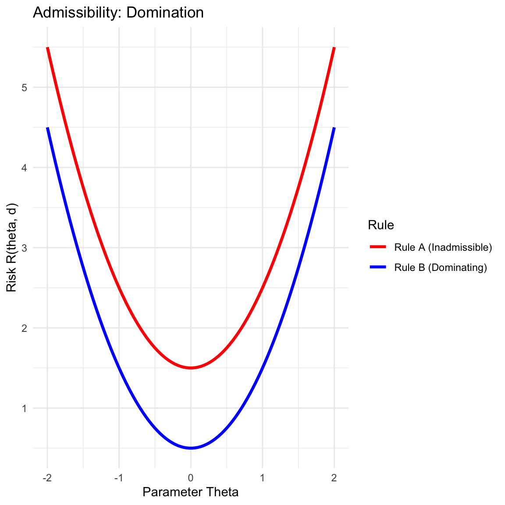
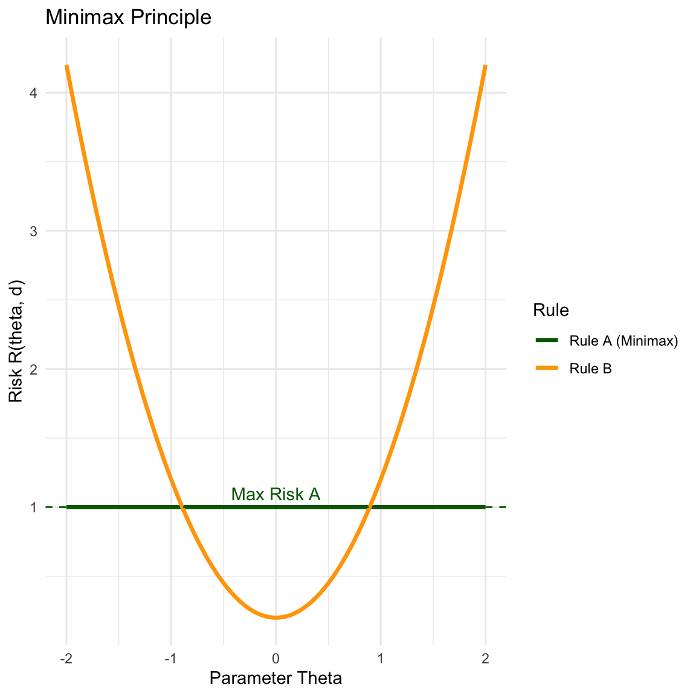
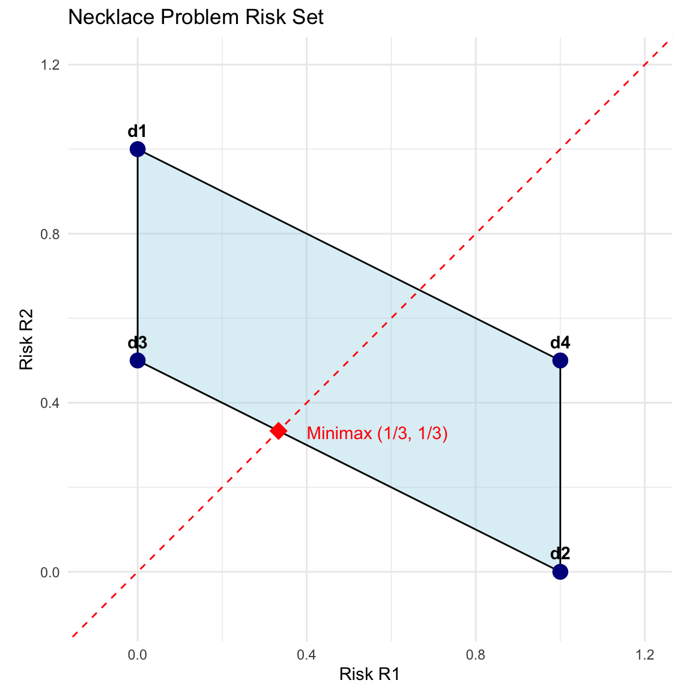
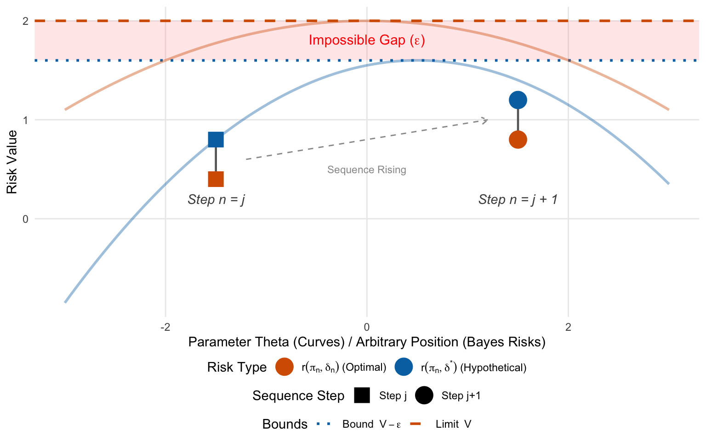

2 Decision Theory
2.1 Formulation of Decision Theory
In decision theory, we formalize the process of making decisions under uncertainty using the following components:
Parameter Space (\(\Theta\)): The set of all possible states of nature or values that the parameter can take. \(\theta \in \Theta\) (e.g., mean, variance).
Sample Space (\(\mathcal{X}\)): The space where the data \(X\) lies. Example: \(X = (X_1, X_2, \dots, X_n)\) where \(X_i \in \mathbb{R}\). So \(\mathcal{X} \in \mathbb{R}^n\).
Family of Probability Distributions: \(\{P_\theta(x) : \theta \in \Theta\}\). This describes how likely we are to see the data \(X\) given a specific parameter \(\theta\).
- If \(X\) is continuous: \(P_\theta(x) = f(x, \theta)\) (Probability Density Function).
- If \(X\) is discrete: \(P_\theta(x) = f(x, \theta)\) (Probability Mass Function).
Action Space (\(\mathcal{A}\)): The set of all actions or decisions available to the experimenter.
Loss Function: \(L: \Theta \times \mathcal{A} \rightarrow \mathbb{R}\). \(L(\theta, a)\) specifies the loss incurred if the true parameter is \(\theta\) and we take action \(a\). Generally, \(L(\theta, a) \ge 0\).
2.2 Decision Rules and Risk Functions
2.2.1 Decision Rule
A decision rule is a function \(d: \mathcal{X} \rightarrow \mathcal{A}\). It dictates the action \(d(x)\) we take when we observe data \(x\).
2.2.2 Risk Function
The risk function is the expected loss for a given decision rule \(d\) as a function of the parameter \(\theta\).
\[R(\theta, d) = E_\theta[L(\theta, d(X))]\]
2.3 Examples of Decision Problems
2.3.1 Example 1: Hypothesis Testing
We want to test \(H_0\) vs \(H_1\).
- Action Space: \(\mathcal{A} = \{0, 1\}\) (0=“Accept \(H_0\)”, 1=“Reject \(H_0\)”).
- Loss Function (0-1 Loss): 0 if correct, 1 if wrong.
- Risk Function:
- If \(\theta \in H_0\): \(R(\theta, d) = P(\text{Type I Error})\).
- If \(\theta \in H_1\): \(R(\theta, d) = P(\text{Type II Error})\).
2.3.2 Example 2: Point Estimation
We want to estimate a parameter \(\theta\).
- Action Space: \(\mathcal{A} = \Theta\).
- Loss Function (Squared Error): \(L(\theta, a) = (\theta - a)^2\).
- Risk Function (MSE): \(R(\theta, d) = \text{Var}(\bar{x}) + \text{Bias}^2\).
2.3.3 Example 3: Interval Estimation
We want to estimate a range for the parameter.
- Action Space: \(\mathcal{A} = \{(l, u) : l \in \mathbb{R}, u \in \mathbb{R}, l \le u\}\).
2.3.4 Example 4: The Duchess and the Emerald Necklace
Scenario: You are the Duchess of Omnium. You have two necklaces: a priceless Real one and a valueless Imitation. They are indistinguishable to you. One is in the Left Drawer (Box 1), the other is in the Right Drawer (Box 2).
The Data (Great Aunt): You consult your Great Aunt. She inspects the Left Drawer first, then the Right.
- If the Real necklace is in the Left (\(\theta=1\)): She identifies it correctly. (Infallible).
- If the Real necklace is in the Right (\(\theta=2\)): She sees the fake first, gets confused, and guesses randomly (\(50/50\)).
2.3.4.1 Formulation
- Parameter Space: \(\Theta = \{1, 2\}\) (1=Real Left, 2=Real Right).
- Action Space: \(\mathcal{A} = \{1, 2\}\) (1=Wear Left, 2=Wear Right).
- Loss Function: 0 if correct, 1 if wrong.
2.3.4.2 Risk Calculation for Deterministic Rules
We consider four deterministic rules \(d(X)\). We calculate the risk (\(R_1\) for \(\theta=1\) and \(R_2\) for \(\theta=2\)) for each.
Rule \(d_1\) (Always Left)
| State | Component | \(X=1\) | \(X=2\) | Risk (Sum) |
|---|---|---|---|---|
| \(\theta=1\) | Loss \(L(1, d)\) | 0 | 0 | |
| Prob \(P(X \mid \theta=1)\) | 1 | 0 | \(R_1 = 0\) | |
| \(\theta=2\) | Loss \(L(2, d)\) | 1 | 1 | |
| Prob \(P(X \mid \theta=2)\) | 0.5 | 0.5 | \(R_2 = 1\) |
Rule \(d_2\) (Always Right)
| State | Component | \(X=1\) | \(X=2\) | Risk (Sum) |
|---|---|---|---|---|
| \(\theta=1\) | Loss \(L(1, d)\) | 1 | 1 | |
| Prob \(P(X \mid \theta=1)\) | 1 | 0 | \(R_1 = 1\) | |
| \(\theta=2\) | Loss \(L(2, d)\) | 0 | 0 | |
| Prob \(P(X \mid \theta=2)\) | 0.5 | 0.5 | \(R_2 = 0\) |
Rule \(d_3\) (Follow Aunt)
| State | Component | \(X=1\) | \(X=2\) | Risk (Sum) |
|---|---|---|---|---|
| \(\theta=1\) | Loss \(L(1, d)\) | 0 | 1 | |
| Prob \(P(X \mid \theta=1)\) | 1 | 0 | \(R_1 = 0\) | |
| \(\theta=2\) | Loss \(L(2, d)\) | 1 | 0 | |
| Prob \(P(X \mid \theta=2)\) | 0.5 | 0.5 | \(R_2 = 0.5\) |
Rule \(d_4\) (Do Opposite)
| State | Component | \(X=1\) | \(X=2\) | Risk (Sum) |
|---|---|---|---|---|
| \(\theta=1\) | Loss \(L(1, d)\) | 1 | 0 | |
| Prob \(P(X \mid \theta=1)\) | 1 | 0 | \(R_1 = 1\) | |
| \(\theta=2\) | Loss \(L(2, d)\) | 0 | 1 | |
| Prob \(P(X \mid \theta=2)\) | 0.5 | 0.5 | \(R_2 = 0.5\) |
2.4 Principles for Choosing a Decision Rule
Since no single rule minimizes risk for all \(\theta\), we rely on several principles to order and select decision rules.
2.4.1 Admissibility
A decision rule \(d\) is admissible if it is not “dominated” by any other rule.
- Domination: A rule \(d\) dominates \(d'\) if \(R(\theta, d) \le R(\theta, d')\) for all \(\theta\), with strict inequality for at least one \(\theta\).
- Inadmissibility: If a rule is dominated, it is inadmissible and can be discarded (we can do better or equal in every possible state).
2.4.2 Minimax Principle
The Minimax principle is a conservative approach that guards against the worst-case scenario. It selects the rule that minimizes the maximum risk. \[ \min_{d} \left[ \sup_{\theta} R(\theta, d) \right] \]
In the plot below, while Rule B has lower risk in the center, it has a very high maximum risk. Rule A is “flatter” and has a lower maximum value, making it the Minimax choice.

2.4.3 Bayes Decision Rules
The Bayes principle incorporates prior knowledge. If we assign a probability distribution (prior) \(\pi(\theta)\) to the parameter, we can calculate the Bayes Risk, which is the weighted average of the risk function. We choose the rule that minimizes this average. \[ r(\pi, d) = E_\pi [R(\theta, d)] = \int_\Theta R(\theta, d) \pi(\theta) d\theta \]
2.5 Risk Set for Finite Parameter Space
For finite parameter spaces (e.g., \(\Theta = \{1, 2\}\)), we can visualize the problem in 2D space where the axes are \(R_1 = R(\theta_1)\) and \(R_2 = R(\theta_2)\).
2.5.1 The Risk Set (\(S\))
The set of all possible risk vectors is called the Risk Set \(S\).
- Deterministic Rules: These are the vertices of the set.
- Randomized Rules: By choosing rule \(d_i\) with probability \(p\) and \(d_j\) with probability \(1-p\), we can achieve any risk on the line segment connecting them.
- Convexity: The Risk Set is the convex hull of the deterministic rules.
2.5.2 Visualizing Admissibility
The admissible rules lie on the lower-left boundary of the set. Any point to the “north-east” of another point is dominated (inadmissible).
2.5.3 Visualizing Minimax
The Minimax rule is found by intersecting the Risk Set with the line \(y=x\) (\(R_1 = R_2\)).
- We look for the point in \(S\) that touches the \(45^\circ\) line at the lowest value.
- If the set is entirely below the line, we minimize \(R_2\). If entirely above, we minimize \(R_1\).
2.5.4 Visualizing Bayes Rules
A Bayes rule minimizes \(\pi_1 R_1 + \pi_2 R_2 = k\). This equation represents a line with slope \(m = -\pi_1 / \pi_2\).
- To find the Bayes rule, we find the tangent line to the Risk Set \(S\) with slope \(-\pi_1 / \pi_2\).

2.6 Revisiting the Necklace Example: Geometric Solution
We now apply the geometric interpretation to the Necklace problem using the risks calculated in Section 2.3.4.
- \(d_1\): \((0, 1)\)
- \(d_2\): \((1, 0)\)
- \(d_3\): \((0, 0.5)\)
- \(d_4\): \((1, 0.5)\)
2.6.1 Analysis
Admissibility:
- \(d_4\) has risk \((1, 0.5)\). \(d_3\) has risk \((0, 0.5)\). Since \(0 < 1\), \(d_3\) strictly dominates \(d_4\). Thus \(d_4\) is inadmissible.
- The efficient frontier connects \(d_3\) and \(d_2\).
Minimax Solution: The Minimax rule lies on the segment connecting \(d_3 (0, 0.5)\) and \(d_2 (1, 0)\).
- Let the randomized rule be \(\delta^* = p d_3 + (1-p) d_2\).
- \(R(\delta^*) = p \begin{pmatrix} 0 \\ 0.5 \end{pmatrix} + (1-p) \begin{pmatrix} 1 \\ 0 \end{pmatrix} = \begin{pmatrix} 1-p \\ 0.5p \end{pmatrix}\).
- Set \(R_1 = R_2\): \(1-p = 0.5p \Rightarrow 1 = 1.5p \Rightarrow p = 2/3\).
- Result: The Minimax rule is to choose \(d_3\) with probability \(2/3\) and \(d_2\) with probability \(1/3\).

2.7 Theorems Relating Minimax and Bayes Rules
In practice, finding a Minimax rule directly is mathematically difficult. A standard strategy is to “guess” a Least Favorable Prior \(\pi\)—defined as the prior distribution that maximizes the minimum Bayes risk (i.e., the prior against which it is hardest to defend)—find the corresponding Bayes rule, and then check if it satisfies specific conditions to confirm it is Minimax.
2.7.1 Constant Risk Bayes Rule Is Minimax (Proof by Contradiction)
Theorem 2.1 (Constant Risk Bayes Rule Is Minimax) Let \(\delta^\pi\) be a Bayes estimator with respect to a prior \(\pi\). If the risk function of \(\delta^\pi\) is constant on the parameter space \(\Theta\), such that \(R(\theta, \delta^\pi) = c\) for all \(\theta \in \Theta\), then \(\delta^\pi\) is a minimax estimator.
Proof. Assume, for the sake of contradiction, that \(\delta^\pi\) is not a minimax estimator.
By definition, if \(\delta^\pi\) is not minimax, there must exist some other estimator \(\delta'\) that has a strictly smaller maximum risk. That is:
\[ \sup_{\theta \in \Theta} R(\theta, \delta') < \sup_{\theta \in \Theta} R(\theta, \delta^\pi) \]
Since we are given that \(R(\theta, \delta^\pi) = c\) for all \(\theta \in \Theta\), its supremum is simply \(c\). Therefore, our assumption implies:
\[ \sup_{\theta \in \Theta} R(\theta, \delta') < c \]
Now, consider the Bayes risk of \(\delta'\) with respect to the prior \(\pi\). The Bayes risk is the weighted average of the risk function:
\[ r(\pi, \delta') = \int_\Theta R(\theta, \delta') \pi(\theta) d\theta \]
Since \(R(\theta, \delta') \le \sup_{\theta} R(\theta, \delta')\) for all \(\theta\), and we assumed this supremum is strictly less than \(c\), it follows that:
\[ r(\pi, \delta') \le \sup_{\theta \in \Theta} R(\theta, \delta') < c \]
However, we know that \(c\) is the Bayes risk of \(\delta^\pi\):
\[ r(\pi, \delta^\pi) = \int_\Theta c \, \pi(\theta) d\theta = c \]
Substituting this into our inequality, we get:
\[ r(\pi, \delta') < r(\pi, \delta^\pi) \]
This result contradicts the fact that \(\delta^\pi\) is a Bayes estimator. By definition, a Bayes estimator must minimize the Bayes risk, meaning \(r(\pi, \delta^\pi) \le r(\pi, \delta)\) for any estimator \(\delta\).
Because our assumption that \(\delta^\pi\) is not minimax leads to a contradiction of the Bayes optimality of \(\delta^\pi\), the assumption must be false. Thus, \(\delta^\pi\) must be minimax.
The plot below visualizes this logic. If an estimator \(\delta'\) (Blue) were to be “better” in a minimax sense than \(\delta^\pi\) (Red), its entire curve would have to stay below the maximum value \(c\). However, if it stays below \(c\) everywhere, its average (Bayes risk) would necessarily be lower than \(c\), which is impossible if \(\delta^\pi\) is the Bayes estimator.
Code
# Define Parameter Space Theta
theta <- seq(0, 1, length.out = 200)
# 1. Constant Risk Bayes Estimator (risk = C)
c_val <- 0.6
risk_bayes <- rep(c_val, length(theta))
# 2. An estimator that would contradict Bayes optimality
# (Always below the constant risk line)
risk_contradiction <- 0.5 + 0.05 * cos(2 * pi * theta)
# Plotting
plot(theta, risk_bayes, type = 'l', lwd = 3, col = "red",
ylim = c(0, 1), ylab = "Risk R(theta, d)", xlab = expression(theta),
main = "Proof by Contradiction Geometry")
# Add the "Better" Estimator (which is impossible)
lines(theta, risk_contradiction, col = "blue", lwd = 2, lty = 2)
# Shaded area showing the "Impossible" Bayes Risk improvement
polygon(c(theta, rev(theta)), c(risk_contradiction, rev(risk_bayes)),
col = rgb(0, 0, 1, 0.1), border = NA)
# Add Legend
legend("topright",
legend = c("Constant Risk Bayes (c)", "Hypothetical 'Better' Est."),
col = c("red", "blue"), lwd = 2, lty = c(1, 2))
2.7.2 Minimaxity via Limiting Bayes Risks
Sometimes the Minimax rule corresponds to an “improper” prior (a prior that does not integrate to 1, like a uniform distribution on the real line). We approach these via a limiting sequence.
Theorem 2.2 (Minimaxity of Limit-Attaining Rules) Let \(\{\delta_n\}\) be a sequence of Bayes rules with respect to priors \(\{\pi_n\}\). Let \(r(\pi_n, \delta_n)\) be the associated Bayes risks. If there exists a rule \(\delta_0\) such that: \[\sup_{\theta} R(\theta, \delta_0) \le \lim_{n \to \infty} r(\pi_n, \delta_n)\] Then \(\delta_0\) is Minimax.
Proof.
Define Limit: Let \(V = \lim_{n \to \infty} r(\pi_n, \delta_n)\). We are given that \(\sup_{\theta} R(\theta, \delta_0) \le V\).
Contradiction Setup: Suppose \(\delta_0\) is not Minimax. Then there exists a rule \(\delta^*\) such that: \[\sup_{\theta} R(\theta, \delta^*) < \sup_{\theta} R(\theta, \delta_0) \le V\] Let \(\sup_{\theta} R(\theta, \delta^*) = V - \epsilon\) for some \(\epsilon > 0\).
Bounded Risk of \(\delta^*\): The Bayes risk of \(\delta^*\) is bounded by its maximum risk: \[r(\pi_n, \delta^*) = \int R(\theta, \delta^*) \pi_n(\theta) d\theta \le V - \epsilon\] Therefore, \(\lim_{n \to \infty} r(\pi_n, \delta^*) \le V - \epsilon\).
Optimality of \(\delta_n\): Since \(\delta_n\) is the Bayes rule for \(\pi_n\), it minimizes Bayes risk. This creates the inequality pair shown in the figure (Orange \(\le\) Blue): \[r(\pi_n, \delta_n) \le r(\pi_n, \delta^*)\]
The Contradiction: Combining the inequalities, we get: \[\lim_{n \to \infty} r(\pi_n, \delta_n) \le \lim_{n \to \infty} r(\pi_n, \delta^*) \le V - \epsilon\] This implies \(V \le V - \epsilon\), which is impossible. Thus \(\delta_0\) must be Minimax. \(\blacksquare\)

2.7.3 Procedure: Verifying Minimaxity
The theorem above provides a practical recipe for identifying Minimax rules, particularly in unbounded parameter spaces (where a standard Least Favorable Prior often does not exist). The procedure is often used “backwards”—we guess a rule and then construct a sequence to prove it is Minimax.
Propose a Candidate Rule (\(\delta_0\)): Identify a rule that intuitively seems robust. Typically, we look for an Equalizer Rule, which is a rule with constant risk (\(R(\theta, \delta_0) = C\) for all \(\theta\)). If the risk is constant, then \(\sup_\theta R(\theta, \delta_0) = C\).
Construct a Sequence of Priors (\(\pi_n\)): Choose a sequence of priors that becomes increasingly “diffuse” or “flat” as \(n \to \infty\) (e.g., Uniform on \([-n, n]\) or Normal with variance \(n\)). These approximate the “improper” prior corresponding to the candidate rule.
Compute Bayes Risks (\(r_n\)): Calculate the Bayes risk \(r(\pi_n, \delta_n)\) for each prior in the sequence. Note that you do not necessarily need the formula for the Bayes rule \(\delta_n\) itself, only its associated risk.
Verify the Condition: Check if the limit of the Bayes risks approaches the maximum risk of your candidate: \[ \lim_{n \to \infty} r(\pi_n, \delta_n) = \sup_{\theta} R(\theta, \delta_0) \] If this holds, \(\delta_0\) is Minimax.
Example 2.1 (The Normal Mean) Consider a single observation \(X \sim N(\theta, 1)\) with squared error loss \(L(\theta, \delta) = (\theta - \delta)^2\). We suspect the sample mean (in this case, just \(X\) itself) is the Minimax estimator.
Step 1: Candidate Rule
Let \(\delta_0(X) = X\). The risk is the variance of the estimator: \[ R(\theta, \delta_0) = E[(\theta - X)^2] = \text{Var}(X) = 1 \] Since the risk is constant (1) for all \(\theta\), \(\sup_\theta R(\theta, \delta_0) = 1\).
Step 2: Sequence of Priors
We choose a sequence of Normal priors \(\pi_n \sim N(0, n)\). As \(n\) increases, the variance increases, making the prior flatter over the real line.
Step 3: Bayes Risks
For a Normal prior \(\theta \sim N(0, \tau^2)\) and data \(X \sim N(\theta, \sigma^2)\), the Bayes risk is known to be: \[ r(\pi, \delta_\pi) = \frac{\sigma^2 \tau^2}{\sigma^2 + \tau^2} \] Substituting our values (\(\sigma^2=1, \tau^2=n\)): \[ r(\pi_n, \delta_n) = \frac{1 \cdot n}{1 + n} = \frac{n}{n+1} \]
Step 4: Verification
We take the limit of the sequence of Bayes risks: \[ \lim_{n \to \infty} r(\pi_n, \delta_n) = \lim_{n \to \infty} \frac{n}{n+1} = 1 \] Comparing this to our candidate: \[ \sup_{\theta} R(\theta, \delta_0) = 1 \le 1 \] The condition holds. Therefore, \(\delta_0(X) = X\) is the Minimax estimator for \(\theta\).
2.7.4 Bayes Rule as a Working Horse to Find a Minimax Rule
2.7.4.1 The Minimax Theorem (Saddle Point)
This theorem connects the search for a Minimax rule to the search for a Least Favorable Prior. It justifies the strategy of “finding the worst prior and solving it.”
Theorem 2.3 (The Minimax Theorem) Let \(\mathcal{D}\) be the set of all decision rules and \(\Pi\) be the set of all prior distributions. Let \(r(\pi, \delta)\) denote the Bayes risk.
The Minimax value equals the Maximin Bayes value: \[ \inf_{\delta \in \mathcal{D}} \sup_{\pi \in \Pi} r(\pi, \delta) = \sup_{\pi \in \Pi} \inf_{\delta \in \mathcal{D}} r(\pi, \delta) \]
Furthermore, a pair \((\delta_0, \pi_0)\) is a Saddle Point if for all \(\delta \in \mathcal{D}\) and \(\pi \in \Pi\): \[ r(\pi_0, \delta) \ge r(\pi_0, \delta_0) \ge r(\pi, \delta_0) \] If such a saddle point exists, then:
- \(\delta_0\) is a Minimax rule.
- \(\pi_0\) is a Least Favorable Prior.
Proof. Goal: We wish to show that if \((\delta_0, \pi_0)\) is a saddle point, then \(\sup_{\theta} R(\theta, \delta_0) \le \sup_{\theta} R(\theta, \delta)\) for any other rule \(\delta\).
1. Interpret the Saddle Point Inequalities: The condition is given as two simultaneous inequalities: \[ \begin{aligned} (A) \quad & r(\pi_0, \delta_0) \le r(\pi_0, \delta) \quad \text{for all } \delta \\ (B) \quad & r(\pi, \delta_0) \le r(\pi_0, \delta_0) \quad \text{for all } \pi \end{aligned} \]
2. Analyze Inequality (A): Since \(r(\pi_0, \delta_0) \le r(\pi_0, \delta)\) for all \(\delta\), \(\delta_0\) minimizes the Bayes risk with respect to \(\pi_0\).
- Therefore, \(\delta_0\) is the Bayes rule for \(\pi_0\).
3. Analyze Inequality (B): Since \(r(\pi, \delta_0) \le r(\pi_0, \delta_0)\) for all \(\pi\), the prior \(\pi_0\) maximizes the average risk of \(\delta_0\).
Since the supremum over all priors includes point-mass priors (which yield the risk at a single \(\theta\)), maximizing over \(\pi\) is equivalent to maximizing over \(\theta\): \[ \sup_{\pi} r(\pi, \delta_0) = \sup_{\theta} R(\theta, \delta_0) \]
Therefore, Inequality (B) implies: \[ \sup_{\theta} R(\theta, \delta_0) = r(\pi_0, \delta_0) \]
4. Combine to Prove Minimaxity: Let \(\delta^*\) be any arbitrary decision rule. We compute its worst-case risk: \[ \begin{aligned} \sup_{\theta} R(\theta, \delta^*) &= \sup_{\pi} r(\pi, \delta^*) & \text{(Max risk = Max average risk)} \\ &\ge r(\pi_0, \delta^*) & \text{(Supremum $\ge$ specific value)} \\ &\ge r(\pi_0, \delta_0) & \text{(From Inequality A: $\delta_0$ is Bayes for $\pi_0$)} \\ &= \sup_{\theta} R(\theta, \delta_0) & \text{(From Step 3)} \end{aligned} \]
5. Conclusion: We have shown that for any \(\delta^*\): \[ \sup_{\theta} R(\theta, \delta^*) \ge \sup_{\theta} R(\theta, \delta_0) \] Thus, \(\delta_0\) minimizes the maximum risk. \(\delta_0\) is Minimax. \(\blacksquare\)
2.7.4.2 Alternating Optimization on the Risk Surface
The Minimax solution can be found computationally by iteratively optimizing one variable while holding the other fixed.
- Fix Prior \(\pi\), Minimize Risk: We search the valley bottom for the current \(\pi\).
- Fix Rule \(\delta\), Maximize Risk: We search the hill top for the current \(\delta\).
This creates a “zigzag” path on the surface that converges to the saddle point.
2.8 Admissibility of Bayes Rules
Bayes rules are generally good candidates for admissibility. If a rule is Bayes, it is likely efficient, provided the prior doesn’t ignore parts of the parameter space.
Theorem 2.4 (Admissibility of Bayes Rules (Finite Support)) If the parameter space \(\Theta\) is finite (or countable) and the prior \(\pi\) assigns positive probability to every \(\theta \in \Theta\) (i.e., \(\pi(\theta) > 0\) for all \(\theta\)), then any Bayes rule \(\delta_\pi\) is admissible.
Proof.
Contradiction Setup: Suppose \(\delta_\pi\) is inadmissible. Then there exists a rule \(\delta'\) that dominates it. By definition of domination:
- \(R(\theta, \delta') \le R(\theta, \delta_\pi)\) for all \(\theta\).
- \(R(\theta_k, \delta') < R(\theta_k, \delta_\pi)\) for at least one \(\theta_k\).
Bayes Risk Difference: Consider the difference in Bayes risk: \[r(\pi, \delta_\pi) - r(\pi, \delta') = \sum_{\theta \in \Theta} \pi(\theta) [R(\theta, \delta_\pi) - R(\theta, \delta')]\]
Strict Positivity:
- Since \(\delta'\) dominates \(\delta_\pi\), each term \([R(\theta, \delta_\pi) - R(\theta, \delta')]\) is non-negative (\(\ge 0\)).
- At \(\theta_k\), the term is strictly positive (\(> 0\)).
- We assumed the prior has full support, so \(\pi(\theta) > 0\) for all \(\theta\).
Summation: A sum of non-negative terms where at least one term is strictly positive must be strictly positive. \[r(\pi, \delta_\pi) - r(\pi, \delta') > 0 \implies r(\pi, \delta') < r(\pi, \delta_\pi)\]
Conclusion: This contradicts the definition that \(\delta_\pi\) is a Bayes rule (which must minimize Bayes risk). Therefore, \(\delta_\pi\) is admissible. \(\blacksquare\)
2.8.1 Admissibility of Unique Bayes Rules
If the Bayes rule is unique, we can drop the requirement that the parameter space be discrete or finite.
Theorem 2.5 (Admissibility of Unique Bayes Rules) Let \(\delta_\pi\) be a Bayes rule with respect to \(\pi\). If \(\delta_\pi\) is the unique Bayes rule (up to risk equivalence), then \(\delta_\pi\) is admissible.
Proof.
Contradiction Setup: Suppose \(\delta_\pi\) is inadmissible. Then there exists a rule \(\delta'\) such that: \(R(\theta, \delta') \le R(\theta, \delta_\pi)\) for all \(\theta\), with strict inequality for some set of \(\theta\).
Bayes Risk Inequality: Taking the expectation with respect to \(\pi\): \[r(\pi, \delta') = \int R(\theta, \delta') \pi(\theta) d\theta \le \int R(\theta, \delta_\pi) \pi(\theta) d\theta = r(\pi, \delta_\pi)\]
Minimality: Since \(\delta_\pi\) is Bayes, it minimizes the risk, so \(r(\pi, \delta_\pi) \le r(\pi, \delta')\). Combining these gives \(r(\pi, \delta') = r(\pi, \delta_\pi)\).
Uniqueness: This implies that \(\delta'\) is also a Bayes rule. However, we assumed that \(\delta_\pi\) is the unique Bayes rule. Therefore, \(\delta'\) must be equal to \(\delta_\pi\) (in terms of risk functions).
Conclusion: If \(\delta'\) and \(\delta_\pi\) have identical risk functions, then \(\delta'\) cannot strictly dominate \(\delta_\pi\). This contradicts the assumption of inadmissibility. Thus, \(\delta_\pi\) is admissible. \(\blacksquare\)